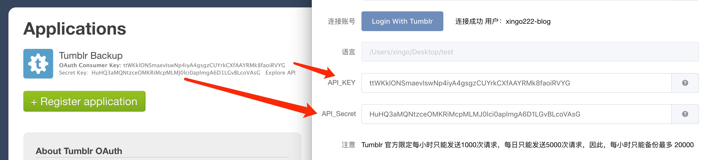

Loading...
你还没有连接 Tumblr 账号，没法显示自己的收藏哦。
你还没有连接 Tumblr 账号，没法显示自己的关注哦。
{{ settingPage.tumblrLoginError }}
由于 Tumblr 官方限制，每小时最多发送1000次请求，每24小时做多发送5000次请求，每次请求最大20条帖，即每小时只能最多获取20000条帖的图片与视频，每24小时做多只能获取10万条贴的内容。
由于这个小工具暂时只内嵌了一个应用的Key，大家共享的情况下，很快次数就会被枯竭。
但是我们可以通过自己的Tumblr账号创建一个自己的应用Key以保证独享下载。
1. 打开 https://www.tumblr.com/oauth/register
2. 如下图填写
粘贴网址在这里：
https://works.xingoxu.com/tumblr-backup/authorize.html
3. 按下注册后跳转至如下图页面，请按如图复制

4. 点击保存！！！
5. 重启软件，重新连接账号即可